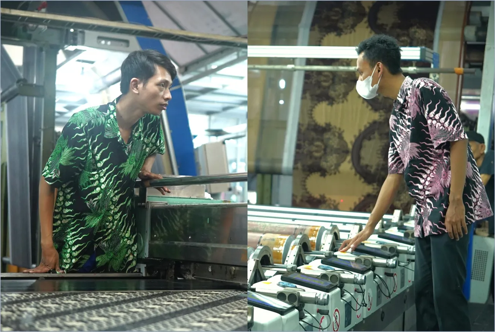

Flat Printing dan Rotary Printing: Memahami Dua Metode Printing Kain
Sekilas, kain bermotif mungkin terlihat sederhana. Namun, di balik motif yang tercetak pada permukaan kain terdapat metode dan proses produksi yang berbeda.
Dalam industri textile printing, salah satu hal yang perlu diperhatikan adalah metode printing yang digunakan.
Dua metode yang dikenal dalam proses printing kain adalah Flat Printing dan Rotary Printing. Keduanya memiliki karakteristik masing-masing dan penggunaannya dapat disesuaikan dengan kebutuhan produksi.
Apa Itu Flat Printing?
Flat printing menggunakan screen berbentuk datar untuk menerapkan warna dan motif pada permukaan kain.
Prosesnya dilakukan secara bertahap sesuai dengan bagian warna dan motif yang akan dicetak.
Metode ini dapat digunakan untuk menghasilkan berbagai motif pada kain dengan memperhatikan detail desain dan kebutuhan produksinya.
Apa Itu Rotary Printing?
Berbeda dengan flat printing, rotary printing menggunakan screen berbentuk silinder atau rotary screen yang bergerak selama proses pencetakan.
Karena prosesnya berlangsung secara kontinu, metode ini memiliki karakteristik yang berbeda dari flat printing dan dapat digunakan untuk kebutuhan produksi tertentu.
Apa Perbedaannya?
Perbedaan utama keduanya terletak pada bentuk media printing dan cara proses pencetakan dilakukan.
Flat Printing
- Menggunakan screen datar
- Proses pencetakan dilakukan secara bertahap
- Memiliki karakter proses yang berbeda untuk kebutuhan desain dan produksi tertentu
Rotary Printing
- Menggunakan screen berbentuk silinder
- Proses pencetakan berlangsung secara kontinu
- Memiliki karakter yang berbeda untuk kebutuhan produksi tertentu
Pemilihan metode tidak hanya ditentukan oleh tampilan akhir kain. Desain, material, kebutuhan produksi, serta karakter produk juga menjadi bagian yang perlu dipertimbangkan.
Memilih Proses yang Sesuai
Tidak semua kebutuhan tekstil membutuhkan pendekatan produksi yang sama.
Karena itu, memahami karakter dari setiap metode printing dapat membantu menentukan proses yang sesuai dengan kebutuhan.
Pada akhirnya, metode yang digunakan hanyalah salah satu bagian dari perjalanan panjang sebuah kain.
Masih ada material, desain, warna, finishing, hingga quality control yang turut menentukan hasil akhirnya.